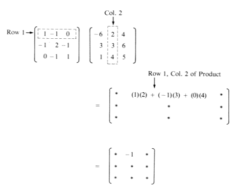

Ken Levasseur, Al Doerr, Michiel Smid, Oscar Levin, Charles M. Grinstead, J. Laurie Snell, Eric Lehman, F. Thomson Leighton, Albert R Meyer, Jeff Erickson, Kenneth P. Bogart, Carol Chritchlow, David Eck, OpenDSA Project, L.J. Miller
A convenient way of describing a matrix in general is to designate each entry via its position in the array. That is, the entry \(a_{34}\) is the entry in the third row and fourth column of the matrix \(A\text{.}\) Depending on the situation, we will decide in advance to which set the entries in a matrix will belong. For example, we might assume that each entry \(a_{ij}\) (\(1 \leq i\leq m\text{,}\)\(1 \leq j \leq n\)) is a real number. In that case we would use \(M_{m\times n}(\mathbb{R})\) to stand for the set of all \(m\) by \(n\) matrices whose entries are real numbers. If we decide that the entries in a matrix must come from a set \(S\text{,}\) we use \(M_{m\times n}(S)\) to denote all such matrices.
Definition7.1.2.The Order of a Matrix.
A matrix \(A\) that has \(m\) rows and \(n\) columns is called an \(m\times n\) (read “\(m\) by \(n\)”) matrix, and is said to have order \(m \times n\text{.}\)
Since it is rather cumbersome to write out the large rectangular array above each time we wish to discuss the generalized form of a matrix, it is common practice to replace the above by \(A = \left(a_{ij}\right)\text{.}\) In general, matrices are often given names that are capital letters and the corresponding lower case letter is used for individual entries. For example the entry in the third row, second column of a matrix called \(C\) would be \(c_{32}\text{.}\)
Since we now understand what a matrix looks like, we are in a position to investigate the operations of matrix algebra for which users have found the most applications.
First we ask ourselves: Is the matrix \(A =\left(
\begin{array}{cc}
1 & 2 \\
3 & 4 \\
\end{array}
\right)\) equal to the matrix \(B =\left(
\begin{array}{cc}
1 & 2 \\
3 & 5 \\
\end{array}
\right)\text{?}\) No, they are not because the corresponding entries in the second row, second column of the two matrices are not equal.
Next, is \(A =\left(
\begin{array}{ccc}
1 & 2 & 3 \\
4 & 5 & 6 \\
\end{array}
\right)\) equal to \(B=\left(
\begin{array}{cc}
1 & 2 \\
4 & 5 \\
\end{array}
\right)\text{?}\) No, although the corresponding entries in the first two columns are identical, \(B\) doesn’t have a third column to compare to that of \(A\text{.}\) We formalize these observations in the following definition.
Definition7.1.4.Equality of Matrices.
A matrix \(A\) is said to be equal to matrix \(B\) (written \(A = B\)) if and only if:
\(A\) and \(B\) have the same order, and
all corresponding entries are equal: that is, \(a_{ij}\) = \(b_{ij}\) for all appropriate \(i\) and \(j\text{.}\)
Subsection7.1.2Matrix Addition and Scalar Multiplication
The first two operations we introduce are very natural and are not likely to cause much confusion. The first is matrix addition. It seems natural that if \(A =\left(
\begin{array}{cc}
1 & 0 \\
2 & -1 \\
\end{array}
\right)\) and \(B =\left(
\begin{array}{cc}
3 & 4 \\
-5 & 2 \\
\end{array}
\right)\) , then
However, if \(A=\left(
\begin{array}{ccc}
1 & 2 & 3 \\
0 & 1 & 2 \\
\end{array}
\right)\) and \(B = \left(
\begin{array}{cc}
3 & 0 \\
2 & 8 \\
\end{array}
\right)\text{,}\) is there a natural way to add them to give us \(A+B\text{?}\) No, the orders of the two matrices must be identical.
Definition7.1.5.Matrix Addition.
Let \(A\) and \(B\) be \(m\times n\) matrices. Then \(A+B\) is an \(m\times n\) matrix where \((A
+ B)_{ij} = a_{ij} + b_{ij}\) (read “The \(i\)th \(j\)th entry of the matrix \(A + B\) is obtained by adding the \(i\)th \(j\)th entry of \(A\) to the \(i\)th \(j\)th entry of \(B\)”). If the orders of \(A\) and \(B\) are not identical, \(A+B\) is not defined.
In short, \(A + B\) is defined if and only if \(A\) and \(B\) are of the same order.
Another frequently used operation is that of multiplying a matrix by a number, commonly called a scalar in this context. Scalars normally come from the same set as the entries in a matrix. For example, if \(A\in M_{m\times n}(\mathbb{R})\text{,}\) a scalar can be any real number.
If \(c = 3\) and if \(A =\left(
\begin{array}{cc}
1 & -2 \\
3 & 5 \\
\end{array}
\right)\) and we wish to find \(c A\text{,}\) it seems natural to multiply each entry of \(A\) by 3 so that \(3 A =\left(
\begin{array}{cc}
3 & -6 \\
9 & 15 \\
\end{array}
\right)\text{,}\) and this is precisely the way scalar multiplication is defined.
Definition7.1.7.Scalar Multiplication.
Let \(A\) be an \(m \times n\) matrix and \(c\) a scalar. Then \(c A\) is the \(m\times n\) matrix obtained by multiplying \(c\) times each entry of \(A\text{;}\) that is \((c A)_{ij} = c a_{ij}\text{.}\)
Subsection7.1.3Matrix Multiplication
A definition that is more awkward to motivate is the product of two matrices. See Exercise 7.1.4.8 for an attempt to do so. In time, the reader will see that the following definition of the product of matrices will be very useful, and will provide an algebraic system that is quite similar to elementary algebra.
Definition7.1.8.Matrix Multiplication.
Let \(A\) be an \(m\times n\) matrix and let \(B\) be an \(n\times p\) matrix. The product of \(A\) and \(B\text{,}\) denoted by \(AB\text{,}\) is an \(m\times p\) matrix whose \(i\)th row \(j\)th column entry is
for \(1\leq i\leq m\) and \(1\leq j\leq p\text{.}\)
The mechanics of computing one entry in the product of two matrices is illustrated in Figure 7.1.9.

Figure7.1.9.Computation of one entry in the product of two 3 by 3 matrices
The computation of a product can take a considerable amount of time in comparison to the time required to add two matrices. Suppose that \(A\) and \(B\) are \(n\times n\) matrices; then \((A B)_{ij}\) is determined performing \(n\) multiplications and \(n-1\) additions. The full product takes \(n^3\) multiplications and \(n^3 - n^2\) additions. This compares with \(n^2\) additions for the sum of two \(n\times n\) matrices. The product of two 10 by 10 matrices will require 1,000 multiplications and 900 additions, clearly a job that you would assign to a computer. The sum of two matrices requires a more modest 100 additions. This analysis is based on the assumption that matrix multiplication will be done using the formula that is given in the definition. There are more advanced methods that, in theory, reduce operation counts. For example, Strassen’s algorithm (https://en.wikipedia.org/wiki/Strassen\_algorithm 1 ) computes the product of two \(n\) by \(n\) matrices in \(7\cdot 7^{\log _2n}-6\cdot 4^{\log _2n}\approx 7 n^{2.808}\) operations. There are practical issues involved in actually using the algorithm in many situations. For example, round-off error can be more of a problem than with the standard formula.
The product \(A B\) is defined only if \(A\) is an \(m\times n\) matrix and \(B\) is an \(n\times p\) matrix; that is, the two “inner” numbers must be equal. Furthermore, the order of the product matrix \(A B\) is the “outer” numbers, in this case \(m\times p\text{.}\)
It is wise to first determine the order of a product matrix. For example, if \(A\) is a \(3\times 2\) matrix and \(B\) is a \(2\times 2\) matrix, then \(A B\) is a \(3\times 2\) matrix of the form
\begin{equation*}
A B =\left(
\begin{array}{cc}
c_{11} & c_{12} \\
c_{21} & c_{22} \\
c_{31} & c_{32} \\
\end{array}
\right)
\end{equation*}
Then to obtain, for example, \(c_{31}\text{,}\) we multiply corresponding entries in the third row of \(A\) times the first column of \(B\) and add the results.
The net effect is to multiply the first row of \(B\) by \(-1\) and the second row of \(B\) by 3.
Note: \(B A =\left(
\begin{array}{cc}
-3 & 30 \\
- 2 & 3 \\
\end{array}
\right) \neq A B\text{.}\) The columns of \(B\) are multiplied by \(-1\) and 3 when the order is switched.
Remarks:
An \(n\times n\) matrix is called a square matrix.
If \(A\) is a square matrix, \(A A\) is defined and is denoted by \(A^2\) , and \(A A A = A^3\text{,}\) etc.
The \(m\times n\) matrices whose entries are all 0 are denoted by \(\pmb{0}_{m\times n}\text{,}\) or simply \(\pmb{ 0}\text{,}\) when no confusion arises regarding the order.
Find \(A I\) and \(B I\) where \(I\) is as in Exercise 3, where \(A = \left(
\begin{array}{cc}
1 & 8 \\
9 & 5 \\
\end{array}
\right)\) and \(B = \left(
\begin{array}{cc}
-2 & 3 \\
5 & -7 \\
\end{array}
\right)\text{.}\) What do you notice?
What is \(I^n\) equal to for any \(n\geq 1\text{?}\)
Prove your answer to part (b) by induction.
7.
If \(A =\left(
\begin{array}{cc}
2 & 1 \\
1 & -1 \\
\end{array}
\right)\text{,}\)\(X =\left(
\begin{array}{c}
x_1 \\
x_2 \\
\end{array}
\right)\text{,}\) and \(B =\left(
\begin{array}{c}
3 \\
1 \\
\end{array}
\right)\) , show that \(A X =B\) is a way of expressing the system \(\begin{array}{c}2x_1 + x_2 = 3\\ x_1 - x_2= 1\\
\end{array}\) using matrices.
Express the following systems of equations using matrices:
\(Ax=\left(
\begin{array}{c}
2x_1+1x_2 \\
1x_1-1x_2 \\
\end{array}
\right)\) equals \(\left(
\begin{array}{c}
3 \\
1 \\
\end{array}
\right)\) if and only if both of the equalities \(2x_1+x_2=3 \textrm{ and } x_1-x_2=1\) are true.
In this exercise, we propose to show how matrix multiplication is a natural operation. Suppose a bakery produces bread, cakes and pies every weekday, Monday through Friday. Based on past sales history, the bakery produces various numbers of each product each day, summarized in the \(5 \times 3\) matrix \(D\text{.}\) It should be noted that the order could be described as “number of days by number of products.” For example, on Wednesday (the third day) the number of cakes (second product in our list) that are produced is \(d_{3,2} = 4\text{.}\)
The main ingredients of these products are flour, sugar and eggs. We assume that other ingredients are always in ample supply, but we need to be sure to have the three main ones available. For each of the three products, The amount of each ingredient that is needed is summarized in the \(3 \times 3\text{,}\) or “number of products by number of ingredients” matrix \(P\text{.}\) For example, to bake a cake (second product) we need \(P_{2,1}=1.5\) cups of flour (first ingredient). Regarding units: flour and sugar are given in cups per unit of each product, while eggs are given in individual eggs per unit of each product.
These amounts are “made up”, so don’t use them to do your own baking!
How many cups of flour will the bakery need every Monday? Pay close attention to how you compute your answer and the units of each number.
How many eggs will the bakery need every Wednesday?
Compute the matrix product \(D P\text{.}\) What do your notice?
Suppose the costs of ingredients are \(\$0.12\) for a cup of flour, \(\$0.15\) for a cup of sugar and \(\$0.19\) for one egg. How can this information be put into a matrix that can meaningfully be multiplied by one of the other matrices in this problem?